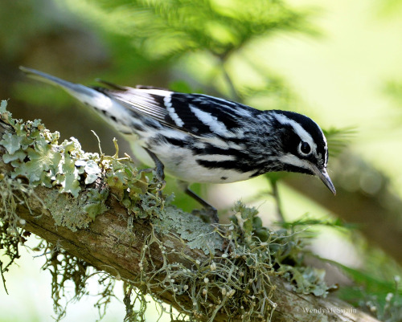

WE ARE ANIMAL
The Giant loves the Rhino. We’re practically related. They’re our sisters from other misters. Our brothers from other mothers. They’re a wild crew of animals that make videos for companies ranging from local ...
-

WE ARE HERE TO BUILD THE BEST CREATIVE COMMUNITY IN THE WORLD
A community is a place and a people knit together by a common love. Love is at the center. Someone great once said, "If you ain't got love, you ain't got shit." We live by ...
SUN WENDY RAIN
My interest in photography stems from many years of underwater photography. In recent years I have taken my sea legs to terra firma and have applied my underwater passions to all birds of a feather and all of Gods creatures which find themselves within...
WELCOME TO THE KINGDOM
Whatever happens, we stick close. As a full team we spend quality time getting to know each other. Through smaller militias we attack problems head-on and knock them out. People know Rhinos as a tight-knit crew. There's a glint in our eye when we walk into a place that startles...

THE DO'S
When Patty Maher was a seventh grade student, her art teacher advised her to stop pursuing art in school because she ...